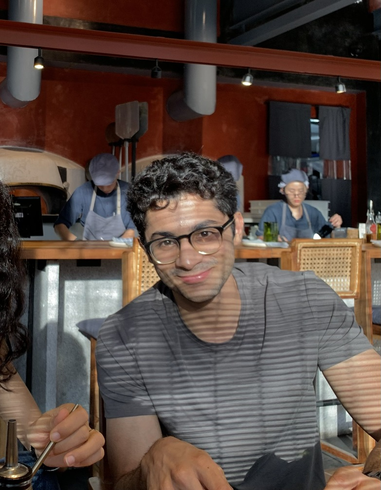

Siddharth Shrimal
I have a bachelor of science degree Economics and Finance from Ashoka University. I grew up in Bangalore and study in Delhi. Currently, I'm headed to Avednus Capital in their investment banking divion.
Economics: I took up econ at university because I wasn't too sure of what I wanted to pursue. Over time, I've really come to revel in its study. I'm particularly drawn to macroeconomics, focusing on growth and structural transformation, and how data-driven analysis informs economic policy and development.
Investing: Both my parents (and my granddad) have careers around investing and finance. I've picked up from it—and enjoy understanding markets from an investing lens.
Health & Fitness: Played basketball as a kid, and now I'm interested in strength training and exploring different ways to stay active.

Contact
You can reach me at siddharth.shrimal_ug25@ashoka.edu.in